使用图标：
重要：📌
提示：💡
备注：ℹ️
警告：⚠️
危险：🚨
[!TIP]
[!note]
[!important]
[!warning]
[!caution]
但是光知道个接口我觉得还不够，底层一点硬件咋做的呢？配 affinity？为啥配 affinity 能够实现呢？
注意：以下的内容均为个人观点+在学习/实践中得出。
如果你看完后有不同的观点也没关系！请指出，我很乐意去尝试积极的东西。
封面：
目录：
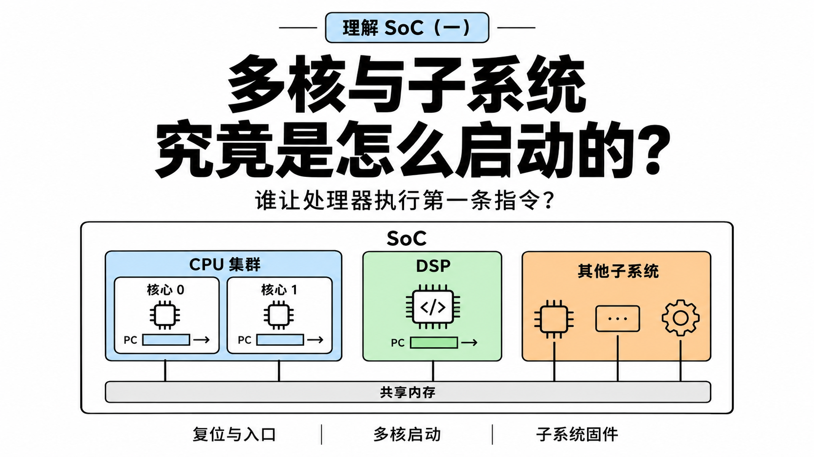
1. introduction
工作、看技术文章、刷 B 站的时候，常常能听说什么：绑核、affinity、让某个应用/游戏运行在某个处理器核心上、什么大小核/能效核......
很多都听不懂（我是小白）......也有可能是我懂，但我不理解他们说的这么高级的名词是啥😅😅
所以我还是按照自己的感觉来学......所以，会有很多大家看起来弱智的问题......
我的几个疑问或者理解：
-
在 Linux 上，大家说的绑核，让某个 Task 运行在指定的处理器核心上是怎么做到的呢？如果又要改变某个核心当前运行的 Task，怎么做呢？
因为有了 Everything is State Machine 的理解，我知道多核处理器的每一个 core，都会有自己的 regs，然后再加上共有的 memory 就能够构成每个单核的状态。
在以下系列文章中：
我应该一直在用这个思想去理解这些东西，感兴趣的可以看看。
所以，我觉得这应该是一个无关于是否有 OS 的问题？
换句话说，哪怕是在什么 RTOS（FreeRTOS、Zephyr、QNX）、bare-metal 的环境，应该也是可以实现的指定的核心运行指定的任务的。
所以怎么做？
-
另外，能不能做到把某些 interrupt handler 指定放到某个 core 上做呢？咋实现呢？
-
SoC 各个 subsystem 的boot行为是啥样的呢？
-
我一直想问的是，为啥超过温度，手机就会限频呢？这是由 vendor 决定的，还是手机厂商 OEM 决定的呢？
-
...
本文为第三个问题的一些回答，刚好本文为（一），后文就会写其他的问题啦。
2. PE 执行程序
基本上，看文章的人都对计算机组成原理有一点了解，也肯定知道什么五级三级流水线，了解过这种模型：PC → Fetch → Decode → Execute，比如这条很简单的指令：
0x400000: ADD x0, x1, x2
获取要执行的 PC 指令(0x400000 处)，按照对应 ISA 进行指令解码（每一个操作数对应到哪一个寄存器、内存操作、分支跳转等等，知道是 add 操作）、具体执行出结果，放到哪里。
也就是理解为：CPU = ALU + registers。
[!TIP]
计组的内容说再多也没啥用，直接去做一遍南京大学的 PA、自己跟着写一个小的 CPU core（哪怕在 AI 的帮助下都行）就理解了。
以前我觉得写东西给别人看，或者和别人交流的时候，要考虑到”知识的诅咒“的影响，总是会想着给他们补充各种基础知识，希望他把我或者我把他当小学生来教，所以就会东讲一点，西讲一点补各种基础，但现在有了 AI 后，还是直接问吧（主要是看到现在各个平台都是各种 AI slop，公众号尤其重，但如果用更加前沿的 AI 写，似乎质量确实高一点），没什么情绪写。
而且，国庆期间似乎想明白了点东西，写东西还是随心一点吧：
写这些的首要任务是给自己用的，其次如果能改变/启发到别人，那只是额外带来的“side effect”。
接着讲，我自己对多核的理解（偏软件的，不太算高性能的）：每一个核心都有自己的 regs，再使用整个系统共有的 memory，共同构成单核的 context，再加上随时能打断每个核心执行流的 interrupt，综合起来构成一个完成的执行实体；而整个系统中有多个这样的执行实体，自然就是多核了。
所以，在软件理解的角度上，我可能会更加用这种单个执行实体的概念来理解处理器。
[!Tip]
如果了解 RISC-V，看过它的 spec，你就会记得一些类似思想的东西，hart[1]：
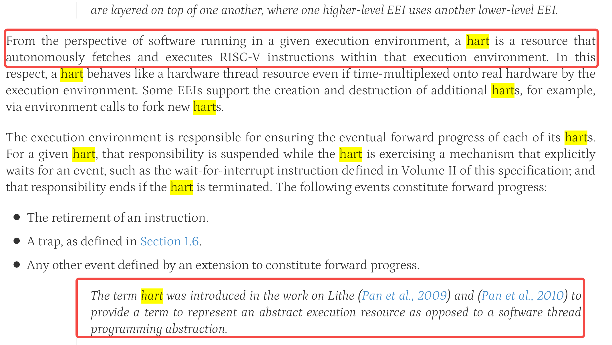
“从软件在特定执行环境中运行的角度来看，hart 是一种能够在该执行环境中自主获取并执行 RISC-V 指令的资源。”
甚至于，在 ARM 官方的文档中，也有类似的概念理解（实话说，看到文档里写的和自己想一块去了还有点小高兴😀）[2]：
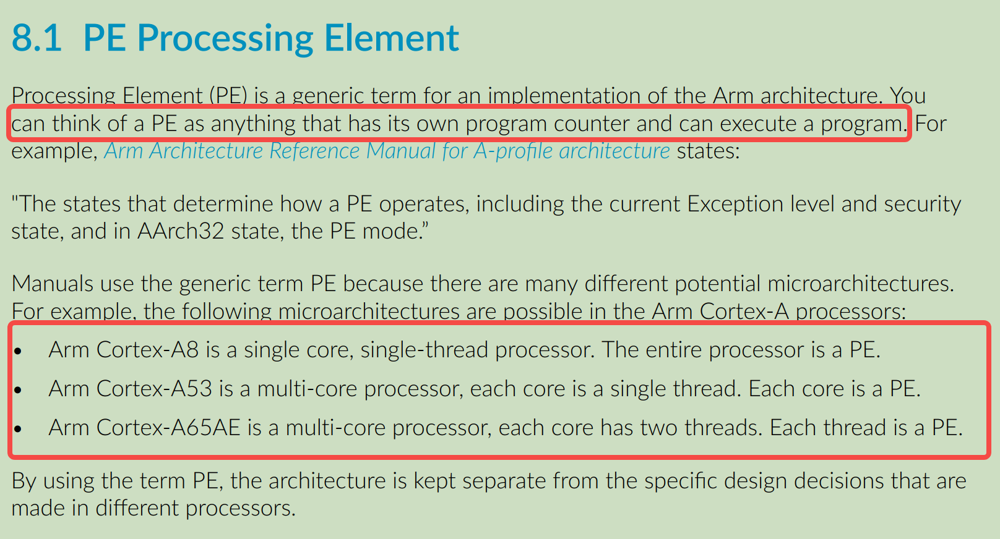
“你可以把 PE 想象成任何有自己的程序计数器并可以执行程序的东西“
所以，我后面就用 PE 来写啦！但严格来说，PE 是 Arm 架构文档中的术语，Hart 是 RISC-V 的对应概念；而 Core 是我们平时更常使用的处理器核心称呼。这几个词不是在所有语境下都能完全互换，不过在接下来讨论「独立执行流」的时候，可以先建立类似的直觉。
但如果要实现多核/多PE、做具体开发工作（比如做 IC 设计，写 cpu core、互联的），这个时候按照上面的理解就不太够了，比如：单核私有的 cache、多核共有的 cache、cache 一致性、分支预测器等等内容都需要涉及。
再比如，按照我上面最基础的抽象模型，PC 都是系统执行流的核心部分，但如果看更加实际的微架构，还需要了解更多：预测未来 PC + 提前取指、投机执行等等。
但还是到此为止，更多内容可看文档介绍，如文末的参考的文章[3-5]，甚至于直接看国外的一些计算机组成课程吧。
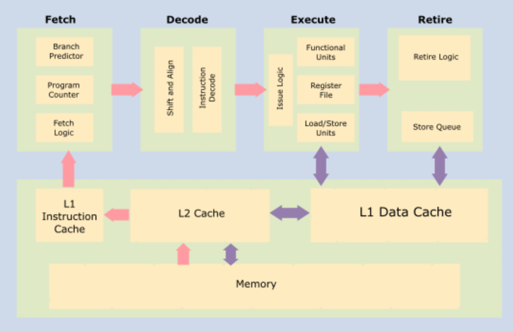
2.1 抽象理解：多核各自执行特定的程序？
回到话题：多核/多PE 怎么就能各自执行特定的程序呢？
前面也说了，PC 是关键，每个核心都有自己的 regs，那只要改变不同核心的 PC，自然就能够让它们执行不同的任务（当然这是抽象理解）。
比如 ARMv8-A 的 CPU core 会包含这些 regs，直接让 GPT 参考 [6] 的第四章画的：

现在，假设我们有两个处理器核心/PE：
Shared Memory
┌───────────────┐
│ RAM │
└───┬───────┬───┘
│ │
┌────┴───┐ ┌─┴──────┐
│ Core 0 │ │ Core 1 │
│ │ │ │
│ PC0 │ │ PC1 │
│ R0... │ │ R0... │
│ ALU │ │ ALU │
│ Fetch │ │ Fetch │
└────────┘ └────────┘
然后 RAM 里有两个程序：
0x1000: Program A, instruction 1
0x1004: Program A, instruction 2
0x1008: Program A, instruction 3
0x2000: Program B, instruction 1
0x2004: Program B, instruction 2
0x2008: Program B, instruction 3
假设我们让两个核心/PE 的初始 PC 分别指向：
PC0 = 0x1000
PC1 = 0x2000
那这两个处理器核心就能够自动执行指令，构成两条并行执行的指令流：
Core 0 Core 1
PC0 = 0x1000 PC1 = 0x2000
│ │
▼ ▼
Fetch 0x1000 Fetch 0x2000
│ │
▼ ▼
Instruction A1 Instruction B1
│ │
▼ ▼
继续执行 A 继续执行 B
[!TIP]
所以......这里好像？根本就没有什么控制器、scheduler、task_struct、affinity，去告诉这些核心“你执行 A，你执行 B”？
Core 0/1 都有自己的一套 regs：
PC0, R0, SP0、PC01, R1, SP1，似乎自己就能够完成状态的流转呢？当然，再一次提醒，上面这个也只是一个最基础的“抽象”。现代 CPU 并不一定每取出一条指令就机械地让 PC 加 4；分支、异常、预测执行等都会让实际过程更复杂。但这不影响我们讨论当前的问题。
接着，问题就变成了：谁把 PC0 设置成 A 的入口地址的？谁把 PC1 设置成 B 的入口地址呢？
换句话说，第一次上电时，这些 PE 的执行状态从哪里来呢？
那有个问题，啥叫第一次上电？看着有点蠢啊...所以额外插一节 2.2，reset 到底是个啥，和主题略微无关，可以直接跳到 2.2 结尾
2.2 Reset 到底是个啥？
在这篇文章的 2.2 中很简单讲了点：跨越 ram 与 disk 的文件系统：initramfs 解析与实践（上）
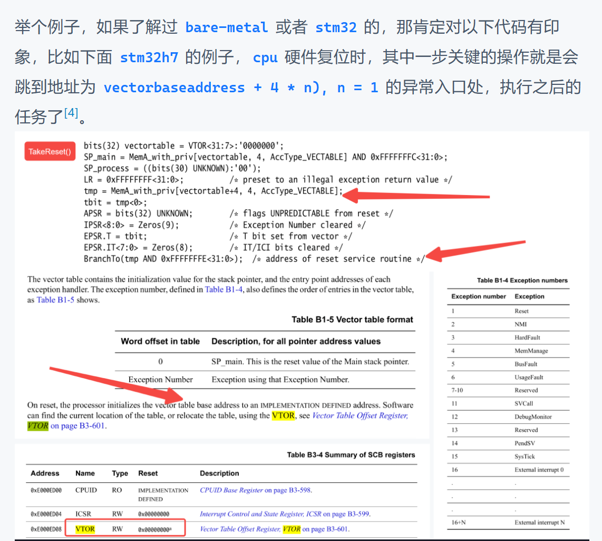
复位（Reset）这个概念首当其冲[7]：
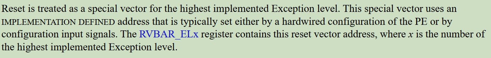
所以，在 ARM 这个层级的概念里：Reset 是一种特殊的异常。它是最高优先级的异常，并且不能被屏蔽。
具体 ARMv8 对于 Reset 再分两种[7,8]：cold reset 和 warm reset。
然而，这里可以继续深入理解，从 PE 上升到完整的 SoC ：
-
PE 层面的复位行为（就是 CPU core）：
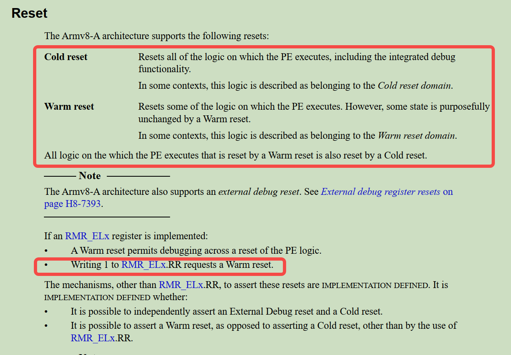
简单理解：
cold reset：比如说，“彻底断电再上电”、“关机后再按电源键开机”、“直接拔电池重新插”等。所有的逻辑全部归零，CPU 需要从BootROM重新跑一遍完整的启动流程。warm reset：一般是系统运行中的复位，比如上图说的，往RMR_ELx.RR写 1 出发 warm reset，就比如：看门狗超时、reboot 命令（但不一定啊！！要看具体厂商的实现！）- 总之可能就是有些功能逻辑不会被复位呗！比如能够直接想到的就是
debug组件的。
但总归要记住的是这是属于 PE 层面的行为。
-
SoC 级 各个组件的 Reset：
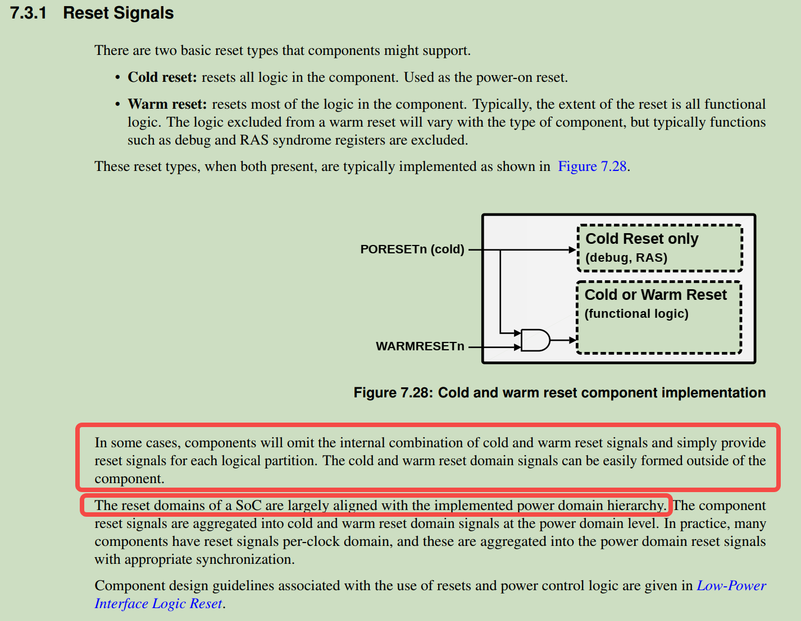
可以看到，有些组件（debug、RAS(可靠性、可用性、可维护性)状态寄存器）只有在 cold reset 的时候才能清空他们，平时的系统重启（warm reset）就不能把这些错误记录和调试信息给弄丢了。
这里引出一个我之前没接触过的概念：Reset domain，可看：Power/Reset domain、subsystem相关概念
这里很有意思，如果你做过
bringup整板或者是某个外设控制器（比如 USB PHY） ，刷过机，你或许会有这种经历：[!TIP]
拿到一个裸板做
bringup，第一次通过按键刷机，识别到设备了...（经过一番折腾，可能没刷进去，或者别的）...想再第二次刷机，但你会发现怎么都识别不到设备了。欸，有经验的工程师会告诉你，需要断电/断电池十几秒再试试，发现这就好了。😲😦
这就是一个很好的例子，尽管我没有做过那种芯片级的 bringup，但我大概能够猜到：SoC 内部的 bootROM 在决定“正常启动”还是“进入刷机模式（比如USB Download/MaskROM模式）”时，或许就是在 cold reset relase 的那一瞬间，去采样特定的一些硬件引脚来判断的。
第一次正常进入刷机模式后，之后折腾出问题，如果复位的不彻底（因为这些 reset domain 什么的属于 implementation defined，所以说不清楚），那就会出现识别不到设备呗，得拔电池断电一会再重新刷机。
“The reset domains of a SoC are largely aligned with the implemented power domain hierarchy.”
真要探究一下本质，其实也比较难，这些 reset domain、power domain 属于 vendor 自己的 SoC 实现，具体细节得是他们的 BSP 的人员才知道了。
2.3 谁决定 PE 第一次从哪里开始执行
扯远了，上面只是之前的一个经历而已。
[!TIP]
但不管怎么样，在这里我理解的复位的作用就是：是让处理器进入架构和实现所规定的初始状态。处理器在相应的复位流程中，会从平台规定的执行入口开始执行代码。（当然，遇到问题，复位还是一种解决问题的“好办法”）
完全可以理解为，就是人为地设置了某个地址，让 PE 在复位的时候，会自动执行这个地址的内容，这也就是在很多资料里看到的所谓 reset vector 了。
这个时候，如果完全触碰了你未知的知识了，那完全就就可以直接问 AI 了，多说无益直接看图（当然这里讨论的基本都是 ARM64 的噢，本人知识受限罢）：
如果是有在芯片原厂做过芯片级 bringup 的，应该对这种概念比我了解的更多。
对于这些概念，依旧推荐阅读 ARM 的手册[7,2]：
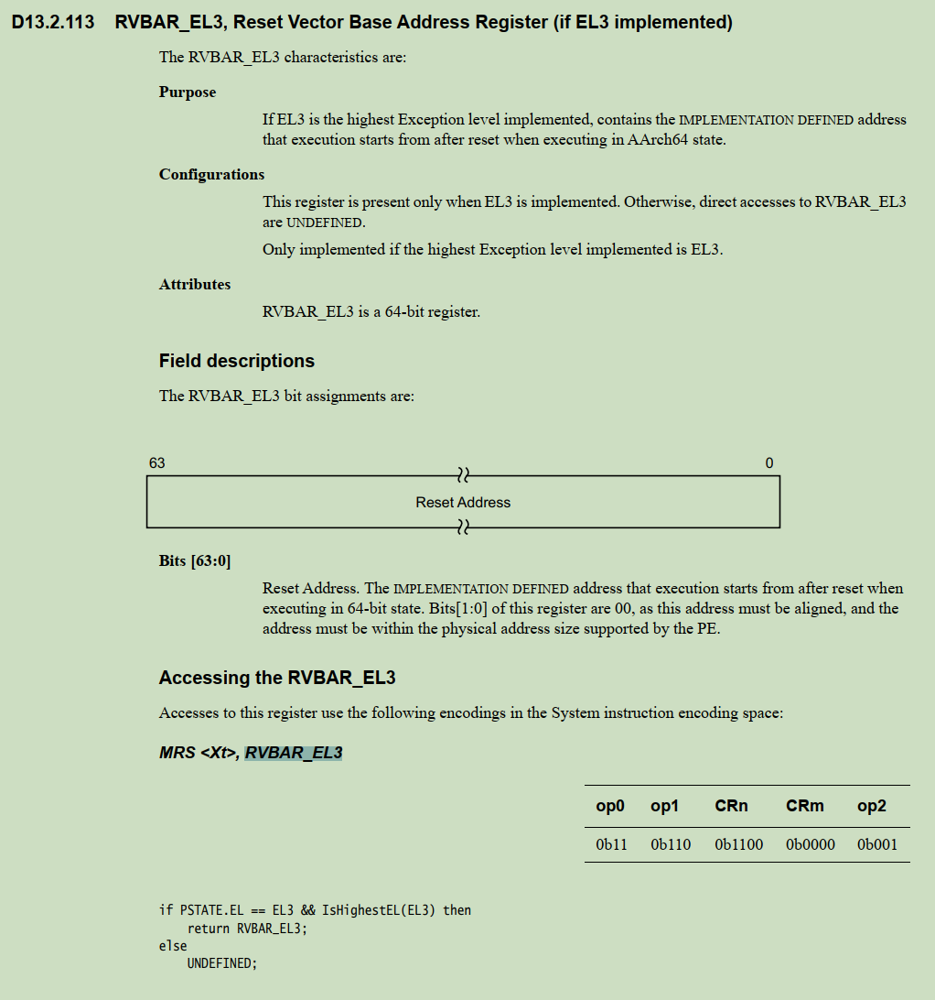
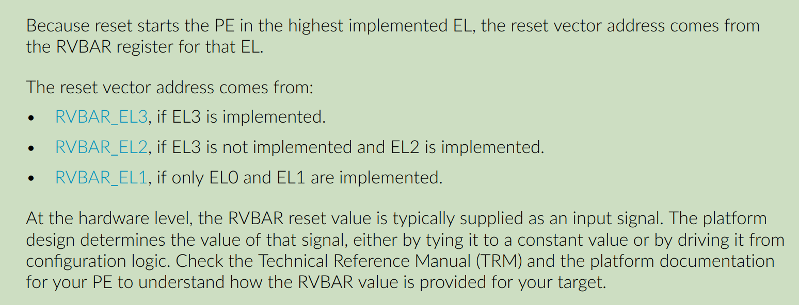
RVBAR_EL3：如果 EL3 是所实现的最高 Exception level（异常级别），则该寄存器包含一个由实现定义（IMPLEMENTATION DEFINED）的地址；在 AArch64 状态下，PE 复位后从该地址开始执行。- “在硬件层面，RVBAR 的复位值通常作为一个输入信号提供。平台设计决定该信号的值：要么将其固定连接（硬连线）到一个常量值，要么由配置逻辑驱动。请查阅你所使用 PE 的 Technical Reference Manual（TRM，技术参考手册）和平台文档，以了解目标平台上 RVBAR 的值是如何提供的”
到此，算是在抽象层面上简单理了一下处理器如何开始执行代码。
3. 多核启动
前面我假设有两个 PE，并且直接规定：
PC0 = 0x1000
PC1 = 0x2000
现在已经知道，处理器启动后需要从某个入口开始执行。
但是，如果 PE 0 和 PE 1 都有自己的执行状态，那么 SoC 上电时，它们是怎么进入这些初始状态的？Reset Vector。
但问题并没有解决：多个 PE 都从同一个 Reset Vector 同时开始启动？还是只启动一个 PE？然后再由这个 PE 启动其他 PE？
- 如果所有 PE 一起起来，会不会多个 PE 同时执行初始化代码，导致重复初始化
.bss、重复配置硬件，甚至使用同一份栈？ - 还是只有一个 PE 先启动执行 Reset Vector 处的代码，然后由它再启动其他 PE？
这里就涉及到具体的多核启动策略，就不再是单纯的 PC 问题了。
这种东西还是直接看官方的一些资料。
在我看 Armv9-A Bare Metal Boot Guide[9] 的时候，发现文档使用的 FVP_Base_AEMvA 示例就演示了一种情况：多个 PE 可以在平台配置下同时离开复位，进入同一个 Reset Vector 对应的启动代码。
[!NOTE]
FVP_Base_AEMvA是 Arm 官方提供的一款固定虚拟平台（Fixed Virtual Platform, FVP），本质上是一个硬件功能模拟器，类似 QEMU 这种指令功能级模拟器，不建模流水线、缓存未命中、分支预测等微架构时序。所以不是“完整真实 SoC”，是“固定参考 SoC 的功能模型”。
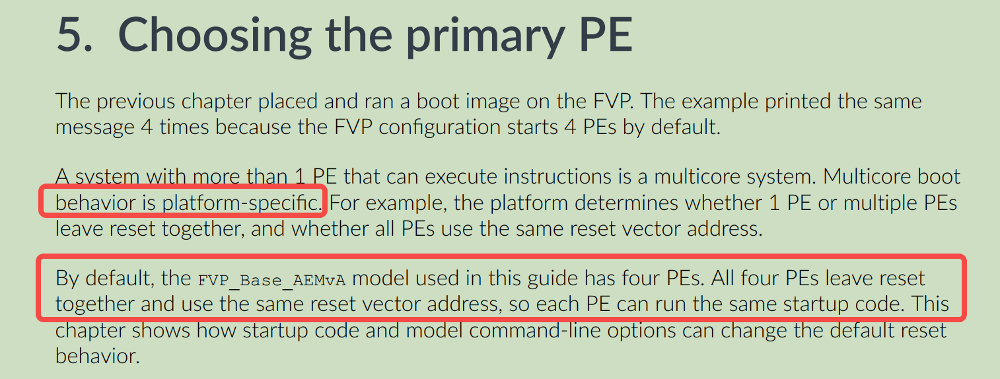
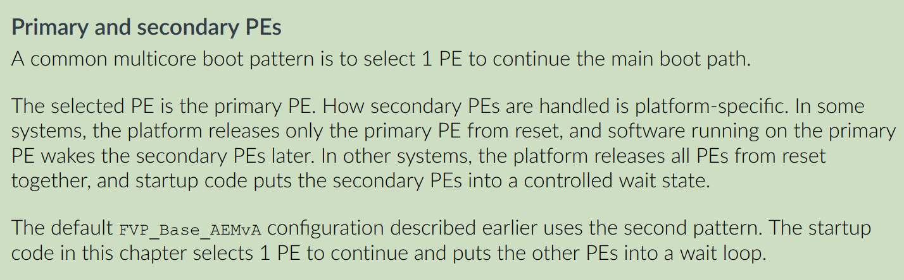
于是，所有 PE 都可能先执行 Reset Vector 处的同一段 reset handler，然后读取 MPIDR_EL1，识别自己在整个处理器拓扑中的身份（是否是主 PE），如图[9]：
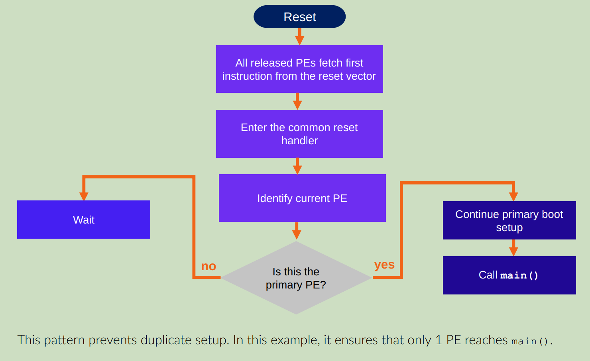
MPIDR_EL1is the Multiprocessor Affinity Register. For this introductory guide, think of MPIDR_EL1 as a register that helps software answer one question: which PE am I running on?
MPIDR_EL1即多处理器亲和性寄存器（Multiprocessor Affinity Register）。在本入门指南中，你可以把MPIDR_EL1理解为一个帮助软件回答如下问题的寄存器：我当前运行在哪个 PE（处理单元）上？
当然了，文档中也提到了另外一种 multicore boot 的方式（上面第一种方法如果不加管控，多个 PE 同时操作一个 stack，很容易 corrupt）：就是在 reset 的时候，只会 release 那个主 PE，让这个主 PE 执行第一条指令。
比如说，我们知道有一个东西叫：Arm Trusted Firmware-A（TF-A），是 ARM 官方推出的启动固件示例。查看它的官方文档，发现其中有个构建选项叫 COLD_BOOT_SINGLE_CPU[10]，默认值为 0，含义也非常直接：
COLD_BOOT_SINGLE_CPU = 0：平台在冷启动时释放多个 CPU，固件需要处理多个 CPU 进入早期启动代码的情况。COLD_BOOT_SINGLE_CPU = 1：平台保证冷启动时只有一个 CPU 会被启动，因此可以省去某些 Primary/Secondary CPU 仲裁流程。
具体据一些例子：TF-A 官方仓库里支持的 MediaTek MT8183，配置冷启动只有一个 CPU会被启动[11]：COLD_BOOT_SINGLE_CPU := 1。
总而言之，multicore boot 选哪种，又还是 platform-specific 了的，还是看你用的啥 SoC。
4. SoC 中其他 subsystem 的启动
写到这里的时候，可以在把视野变广一点，拓宽到整个 SoC Subsystem。
前面讨论的基本都是 PE，而 ARM 官方说的 PE（processing element），是能够执行 Arm 架构指令、具有自己程序计数器的处理单元，是 core。
Clock
│
▼
┌───────────────┐
│ CPU │
│ │
│ PC │
│ Registers │
│ Pipeline │
│ Control FSM │
└───────────────┘
▲
│
RESET
进一步，这也就是我们常说的 AP，跑 Linux/Android 的那个。
但根据你做的业务不同，你还会接触到 SoC 中别的 subsystem，比如：
- 做多媒体显示的，肯定会接触到 DPU、GPU；
- 做编解码的，肯定会接触 VPU；
- 做相机 sensor/影像的，肯定会接触 ISP；
- 做音频的，有肯定会接触到 DSP；
- ......
- 以及一些通用的 BSP 接触的一些特别的核心、控制器等。
让 GPT 给我总结了个表：
| SoC 中的单元 | 典型职责 | 是否应直接理解为 Arm PE？ |
|---|---|---|
| AP CPU Core | 运行 Android/Linux 等通用软件 | 如果实现 Arm 架构，可按 Arm PE 理解 |
| DSP，例如 Qualcomm ADSP/CDSP | 音频、计算或其他信号处理任务 | 不应直接当作 Arm PE；它有自己的处理器架构与固件 |
| SCP，例如 MediaTek System Companion Processor | 运行独立固件，承担平台定义的辅助处理任务 | 需要看具体实现；不能当作 AP CPU 的普通 Core |
| Sensor Hub / Context Hub | 低功耗环境下处理传感器相关任务 | 可能运行在独立低功耗处理器上，但硬件实现因平台而异 |
| ISP / VPU | 图像处理、视频处理 | 可能是专用硬件，也可能含有可编程处理单元，依芯片而定 |
| DPU | 图层混合、缩放、色彩处理与显示输出 | 不应仅凭名称假设它内部有一个通用 MCU |
所以，这些 IP 组件，它们是怎么启动的呢？或者问的更加深刻一点：SoC 中有这么多独立的处理器和硬件子系统，它们都是怎么开始执行、由谁管理，又是如何与 AP 协作的？
这里首先明确两个问题：
- 这个子系统内部，究竟有没有一个能够独立取指、译码、执行指令的处理器？
- 如果有，谁负责启动这个处理器？启动之后，AP 又通过什么方式与它协作？
这样区分的原因在于一个硬件模块能够独立处理数据，并不代表它一定拥有自己的 PC 和指令执行流，构成 ARM 官方所定义的 PE。
举个例子：
- DPU（Display Processing Unit） 里的 Layer Mixer 能够把多个图层混合成一帧画面，但我们通常不会把一个 Layer Mixer 理解成独立的 CPU Core。它可以由硬件状态机和专用数据通路实现，不需要像通用 CPU 那样运行一段程序。
- 但 ADSP 这样的处理器就不一样了。它确实能够执行自己的指令，运行自己的固件。
所以，至少可以先建立两类划分吧：
SoC
│
├── 能够独立执行指令的处理器
│ │
│ ├── AP CPU
│ ├── DSP
│ ├── SCP / MCU
│ └── 其他可编程控制处理器 <--- 噢，这里我才理解“可编程”的概念
│
└── 专用硬件处理单元（这个就不讨论，简单编程配置即可，重点是第一个）
│
├── DMA Engine
├── Layer Mixer
├── Scaler
└── 其他硬件状态机与数据通路
当然，这也不是严格的硬件分类。一个复杂的子系统完全可能同时包含处理器和专用硬件引擎，可以看看 4.2。
因此，这里要用的判断是：这个子系统有没有独立的软件执行流，以及这个执行流如何控制硬件。
所以下面来看看具体例子。
4.1 如果子系统有自己的处理器，谁来启动它？
假设我们在 SoC 中放入一个 DSP。它和 AP CPU 一样，也有自己的寄存器、PC 和执行硬件。
那么它怎么开始执行？从最基础的硬件角度看，满足一些我认为的逻辑条件即可（不一定准确，各平台有自己的设计，比如有些要先加载固件、有些要先复位）：
- 必要的供电、时钟
- 能够访问代码和数据（memory）
- 启动入口确定、解除相应复位、进入运行态
- 开始取指执行，同前面几节分析
然后你觉会遇到一个你或许听过的东西：Linux 的 Remote Processor Framework，也就是 remoteproc [12]：
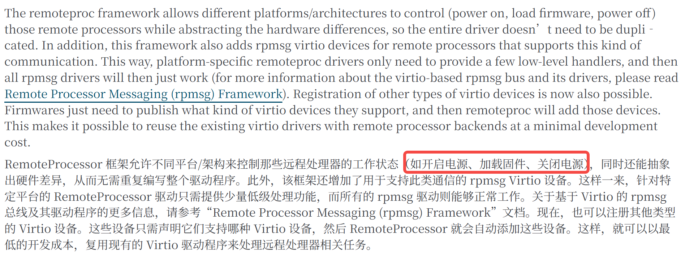
就比如说 DSP，高通的 ADSP、CDSP 等子系统可以包含独立的 DSP 处理器；Linux 代码中有对应的 qcom_q6v5_adsp.c 驱动[13]：
static int adsp_start(struct rproc *rproc)
{
struct qcom_adsp *adsp = rproc->priv; // 取出 probe 时挂在 rproc->priv 上的 qcom_adsp 私有数据
ret = qcom_q6v5_prepare(&adsp->q6v5); // 【第1步 准备启动资源】准备 Q6V5 子系统：IRQ、completion、handover 等运行时上下文
if (ret)
return ret;
ret = adsp_map_carveout(rproc); // 【第2步 配置内存映射】把 remoteproc carveout 映射到 SMMU/IOMMU，供 DSP 访问
if (ret) {
dev_err(adsp->dev, "ADSP smmu mapping failed\n");
goto disable_irqs;
}
ret = clk_prepare_enable(adsp->xo); // 【第3步 使能时钟】使能 XO 主时钟
if (ret)
goto adsp_smmu_unmap;
ret = qcom_rproc_pds_enable(adsp); // 【第3步 使能电源域】真正 enable proxy power domains
if (ret < 0)
goto disable_xo_clk;
ret = clk_bulk_prepare_enable(adsp->num_clks, adsp->clks); // 【第3步 使能时钟】批量使能 ADSP 核心时钟
if (ret) {
dev_err(adsp->dev, "adsp clk_enable failed\n");
goto disable_power_domain;
}
/* Enable the XO clock */
writel(1, adsp->qdsp6ss_base + QDSP6SS_XO_CBCR); // 【第3步 使能时钟】使能 QDSP6SS 内部 XO 时钟分支
/* Enable the QDSP6SS sleep clock */
writel(1, adsp->qdsp6ss_base + QDSP6SS_SLEEP_CBCR); // 【第3步 使能时钟】使能 QDSP6SS sleep clock 分支
/* Enable the QDSP6 core clock */
writel(1, adsp->qdsp6ss_base + QDSP6SS_CORE_CBCR); // 【第3步 使能时钟】使能 QDSP6 core clock 分支
/* Program boot address */
writel(adsp->mem_phys >> 4, adsp->qdsp6ss_base + RST_EVB_REG); // 【第4步 设置 Boot Address】把固件物理地址写入 RST_EVB_REG；>>4 是因为该寄存器以 16 字节为单位
if (adsp->lpass_efuse)
writel(LPASS_EFUSE_Q6SS_EVB_SEL, adsp->lpass_efuse); // 【第4步 设置 Boot Address】通过 efuse 选择 EVB/boot address 来源
/* De-assert QDSP6 stop core. QDSP6 will execute after out of reset */
writel(LPASS_BOOT_CORE_START, adsp->qdsp6ss_base + CORE_START_REG); // 【第5步 解除 Core 停止/复位】写 CORE_START_REG，解除 QDSP6 stop core
/* Trigger boot FSM to start QDSP6 */
writel(LPASS_BOOT_CMD_START, adsp->qdsp6ss_base + BOOT_CMD_REG); // 【第6步 触发硬件 Boot FSM】写 BOOT_CMD_REG，触发 Boot FSM 启动 QDSP6
/* Wait for core to come out of reset */
ret = readl_poll_timeout(adsp->qdsp6ss_base + BOOT_STATUS_REG,
val, (val & BIT(0)) != 0, 10, BOOT_FSM_TIMEOUT); // 【第7步 等待启动状态】轮询 BOOT_STATUS_REG 的 bit0，等待 core 出复位；10us 间隔，BOOT_FSM_TIMEOUT 超时
if (ret) {
dev_err(adsp->dev, "failed to bootup adsp\n");
goto disable_adsp_clks;
}
ret = qcom_q6v5_wait_for_start(&adsp->q6v5, msecs_to_jiffies(5 * HZ)); // 【第7步 确认运行】等待 Q6V5 启动握手/中断，确认 DSP 真正进入运行状态，超时 5 秒
if (ret == -ETIMEDOUT) {
dev_err(adsp->dev, "start timed out\n");
goto disable_adsp_clks;
}
return 0;
disable_adsp_clks:
clk_bulk_disable_unprepare(adsp->num_clks, adsp->clks); // 回滚：关闭核心时钟
disable_power_domain:
qcom_rproc_pds_disable(adsp); // 回滚：关闭电源域
disable_xo_clk:
clk_disable_unprepare(adsp->xo); // 回滚：关闭 XO 时钟
adsp_smmu_unmap:
adsp_unmap_carveout(rproc); // 回滚：解除 carveout 的 SMMU 映射
disable_irqs:
qcom_q6v5_unprepare(&adsp->q6v5); // 回滚：反初始化 Q6V5 上下文
return ret;
}
能够看到：DSP Boot Address、控制 Core Start、触发 Boot FSM 等代码。
这其实又回到了前面的 PC 问题。
对于一个独立处理器来说，最终仍然需要有某种机制（这个 subsystem 自己的 Boot Address 寄存器、Reset Controller 和 Boot FSM 实现），让它从规定的入口开始执行代码。
4.2 一个新例子：Qualcomm DCP+DPU
之后在这个系列：移动 SoC 内部组成 (四)：DPU：从像素数据到屏幕的旅程，我也会用这个例子分析学习。
2026 年 10 月 15 日，Qualcomm 工程师向 Linux 内核社区提交了一组补丁[14]：
[PATCH 00/13] drm/msm/dcp: Add Qualcomm DCP display support
其中介绍了 Qualcomm Display Co-Processor（DCP）架构。
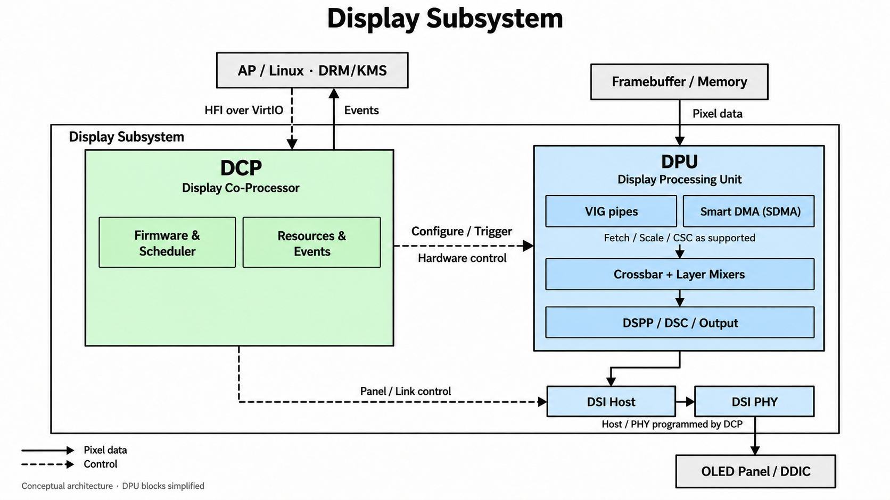
由于我关注的是 DRM/KMS 相关，所以了解到这个了：
-
以前熟悉的 DPU 驱动或者说 DRM/KMS 驱动，通常理解是：Linux 驱动需要配置 SSPP、Layer Mixer、CTL、INTF 等显示硬件资源，最终由硬件 DPU 自己完成一帧的显示。
-
但是根据 Qualcomm 提交的这个补丁说明，采用该架构的平台将显示硬件的控制权交给独立固件。
也就是说，Linux 不再直接配置显示控制器、DSI Controller、DSI PHY 以及相关显示时钟寄存器。相反，Linux 通过 HFI（Host Firmware Interface）协议，把显示配置请求发送给固件，有固件来配置。
二者对比：
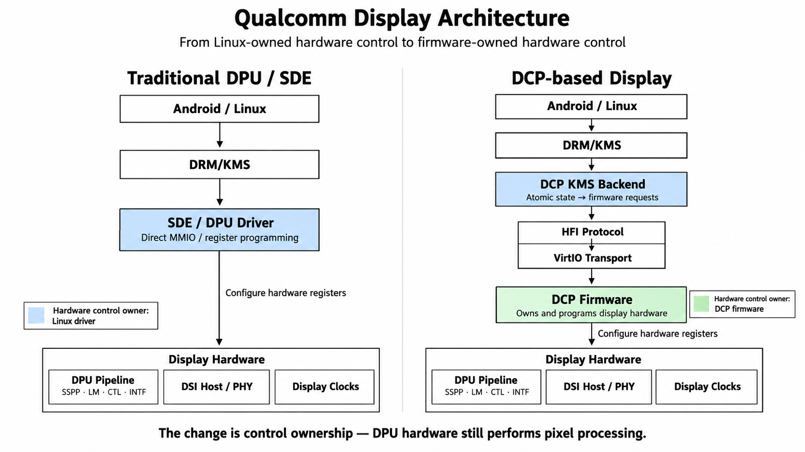
这里发生变化的不是 DPU 的像素处理能力，而是谁负责配置和管理这些硬件资源。
以前我们理解的是：主要由 AP 上运行的显示驱动配置硬件寄存器；现在则由 DCP Firmware 负责配置显示硬件，AP 上的 DRM 驱动通过协议提交请求。
而 Linux 仍然保留 DRM/KMS 的软件接口，对上层提供 Plane、CRTC、Framebuffer、Page Flip 等抽象。
回到我的主题的话，这就产生了一个很有意思的问题：既然 DCP 有自己的 Firmware，那这个 Firmware 是谁启动的？
因为从目前这组公开补丁来看，Linux 侧的 DCP 驱动主要负责：
- 建立 VirtIO-MMIO 通信；
- 通过 HFI 发送显示命令、接收响应和异步事件；
- 使用 IPCC 进行电源状态相关通知；
- 配置相应的 IOMMU/DMA 通信资源；
- 将固件报告的显示能力映射到 DRM/KMS。
而这组补丁并没有展示一个通过 remoteproc 加载 DCP 固件、设置 DCP Core 启动地址、再释放其复位的完整流程。
所以，目前暂时能够确定的是（未来 maybe）：这套 DCP 的 Linux 显示驱动并不是通过 remoteproc 来管理 DCP 的初始启动，而是作为一个固件托管设备的客户端，与已经具备服务能力的 DCP 固件建立通信。
但是我大概能够猜到的是，可以由 bootloader 启动呀？！因为，这个显示模块，早期的 bootloader，XBL/ABL 用呀。
总之，这就是给了一个想法点，有时候不要局限于 AP 上已经跑的 Linux 呢，启动早期的另一些固件也可能做这件事呀！
至于那些固件怎么做，也是类似了呀。
5. 小结：我现在究竟理解了什么？
到这里，我觉得已经可以把开头的问题收束一下。
一开始，我们假设：
PC0 = 0x1000
PC1 = 0x2000
然后问，两个 PE 是怎么分别执行不同程序的？
最基本的答案是：每个 PE 拥有自己的执行状态与指令执行硬件，它们可以沿着不同的指令流推进。
接着，我们问谁决定这些初始执行状态。
对于单个 PE，复位机制规定了开始执行的入口；在相应的 Arm 配置中，可以通过 RVBAR_EL3 相关定义理解这个入口。
然后，我们继续问：多核 SoC 是不是所有 PE 都会同时进入这个入口？
答案取决于平台。Arm FVP 的教学示例可以让多个 PE 进入公共 Reset Handler，再由软件识别 Primary；TF-A 也明确支持平台保证冷启动时只有一个 CPU 启动的配置。
最后，我们把视野放大到整个 SoC，发现 AP CPU 之外，还可能有独立的 DSP、SCP、Sensor Hub 等处理器，以及 DPU、ISP、VPU 等专用硬件子系统。
它们不一定使用同一种启动机制。有独立处理器和固件的子系统，可能通过平台电源控制、复位控制、启动地址和 Remote Processor Framework 等机制开始执行；专用硬件引擎则可能主要依靠寄存器配置与硬件状态机工作。
所以，我觉得这里可以先记住两句话：
第一，PE 的抽象是用来理解独立执行流的；它不是说 SoC 中每一个会处理数据的模块都是通用 CPU。
第二，处理器如何开始执行代码，是架构、处理器实现、SoC 平台和固件共同决定的事情，不能只凭一个抽象模型就推断所有芯片的启动方式。
那么，接下来就可以继续追问了：
如果平台只在最初释放一个 PE，那么其他 PE 后来究竟是如何被启动的？如果它们已经运行起来，又如何让某个 PE 从当前执行流转到另一个执行流？
这就会继续涉及 PSCI、CPU_ON、GIC/SGI、中断和异常处理，以及 Linux 中的任务上下文切换。
而这些机制之间的区别，也正是我接下来要继续弄明白的事情。
等之后章节吧。
参考
[1] The RISC-V Instruction Set Manual, Volume I: Unprivileged Architecture：https://riscv-admin.github.io/antora-dev.riscv.org/reference/isa/_attachments/riscv-unprivileged.pdf
[2] Learn the architecture - Introducing the Arm architecture：https://support.arm.com/documentation/102404/0203/?lang=en
[3] Computer System Overview - Introduction to ARM AArch64 Architecture and Low-level Programming：https://hrishim.github.io/llvl_prog1_book/comp_overview.html
[4] 从A76到A78——在变化中学习ARM微架构：https://blog.csdn.net/feelabclihu/article/details/125942431?utm_source=chatgpt.com
[5] ARM Cortex-A72 MPCore Processor Technical Reference Manual r0p3：https://support.arm.com/documentation/100095/0003/?lang=en
[6] ARM Cortex-A Series Programmer’s Guide for ARMv8-A：https://cs140e.sergio.bz/docs/ARMv8-A-Programmer-Guide.pdf
[7] Arm Architecture Reference Manual Armv8, for A-profile architecture：https://support.arm.com/documentation/ddi0487/gb
[8] Power Control System Architecture：https://support.arm.com/documentation/den0050/latest/
[9] Armv9-A Bare-Metal Boot Guide：https://support.arm.com/documentation/112165/0100?lang=en
[10] arm-trusted-firmware/make_helpers/defaults.mk at master · ARM-software/arm-trusted-firmware：https://github.com/ARM-software/arm-trusted-firmware/blob/master/make_helpers/defaults.mk
[11] arm-trusted-firmware/plat/mediatek/mt8183/platform.mk at master · ARM-software/arm-trusted-firmware · GitHub：https://github.com/ARM-software/arm-trusted-firmware/blob/master/plat/mediatek/mt8183/platform.mk
[12] Remote Processor Framework — The Linux Kernel documentation：https://docs.kernel.org/staging/remoteproc.html
[13] linux/drivers/remoteproc/qcom_q6v5_adsp.c：https://github.com/torvalds/linux/blob/master/drivers/remoteproc/qcom_q6v5_adsp.c
[14] [PATCH 00/13] drm/msm/dcp: Add Qualcomm DCP display support：https://lore.landau.one/lkml/20261015-jshekhar-drm-msm-dcp-v1-v1-0-48aad0fe4f72@oss.qualcomm.com/T/?utm_source=chatgpt.com